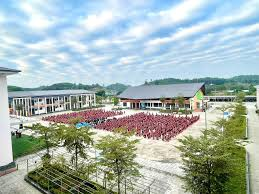

Với bề dày truyền thống và sự nỗ lực không ngừng, ngôi trường đã và đang khẳng định vị thế của mình trong sự nghiệp "trồng người" tại địa phương.
1. Lịch Sử Hình Thành Và Phát Triển
Trường THPT Tức Tranh được thành lập nhằm đáp ứng nhu cầu học tập của con em các dân tộc tại các xã phía Nam huyện Phú Lương như Vô Tranh, Tức Tranh, Phú Đô...
Những ngày đầu gian khó: Từ những ngày đầu mới thành lập với cơ sở vật chất còn khiêm tốn, lớp học còn đơn sơ, thầy và trò nhà trường đã cùng nhau vượt qua muôn vàn khó khăn.
Sự chuyển mình mạnh mẽ: Trải qua nhiều thập kỷ, được sự quan tâm của Đảng bộ, chính quyền tỉnh Thái Nguyên và huyện Phú Lương, trường đã có những bước tiến dài về quy mô và chất lượng. Từ những dãy nhà cấp 4, nay đã thay thế bằng những tòa nhà cao tầng khang trang, hiện đại.
2. Cơ Sở Vật Chất – Không Gian Học Tập Lý Tưởng
Bước chân vào cổng trường THPT Tức Tranh, cảm giác đầu tiên chính là sự trong lành và bình yên.
Khuôn viên xanh - sạch - đẹp: Nhà trường rất chú trọng đến không gian xanh. Những hàng cây cổ thụ tỏa bóng mát, những bồn hoa rực rỡ sắc màu tạo nên một môi trường sư phạm thân thiện.
Hệ thống phòng học: Các phòng học được trang bị đầy đủ ánh sáng, quạt mát và các thiết bị hỗ trợ giảng dạy hiện đại như tivi, máy chiếu, giúp bài giảng của thầy cô trở nên sinh động hơn.
Phòng chức năng: Nhà trường sở hữu hệ thống phòng thí nghiệm Lý - Hóa - Sinh, phòng máy tính kết nối internet tốc độ cao và thư viện với hàng ngàn đầu sách phong phú.
Khu thể chất: Sân bóng đá, sân bóng chuyền và cầu lông là nơi học sinh rèn luyện sức khỏe sau những giờ học căng thẳng.

3. Đội Ngũ Giáo Viên – Những "Người Chèo Đò" Tận Tâm
Tinh hoa của trường THPT Tức Tranh nằm ở đội ngũ cán bộ, giáo viên. Nhà trường mới hoạt động thời gian ngắn, chỉ mới được vài năm, với sự công hiến hết mình của Ban giám hiệu:

Cô Nguyễn Thị Hòa
Bí thư chi bộ - Hiệu trưởng

Thầy Nguyễn Toàn Thắng
Phó bí thư - Phó Hiệu trưởng

Thầy Đinh Hồng Tấn
Phó Hiệu trưởng
Với thầy Trần Trung Kiên (giáo viên môn Vật lý), thầy Hoàng Văn Truyền (giáo viên môn Tin học) cùng các thầy cô giáo bộ phận chỉ đạo tài tình, nhà trường càng ngày càng tiến bộ và phát triển.
Sáng tạo và đổi mới: Các thầy cô tích cực ứng dụng công nghệ thông tin, đổi mới phương pháp dạy học theo hướng phát triển năng lực học sinh.
4. Chất Lượng Giáo Dục Và Thành Tích Vẻ Vang
Trong những năm gần đây, trường THPT Tức Tranh liên tục gặt hái được những thành công đáng tự hào:
- Tỷ lệ đỗ tốt nghiệp THPT: Luôn giữ vững ở mức cao, nhiều năm đạt 100%.
- Kết quả thi Đại học: Nhiều học sinh đỗ đạt và thành tích cao vào các trường đại học top đầu.
- Học sinh giỏi cấp tỉnh: Hàng năm, trường đều có học sinh đạt giải cao trong các kỳ thi chọn học sinh giỏi các môn văn hóa, thi khoa học kỹ thuật.

5. Hoạt Động Ngoại Khóa – Nơi Tài Năng Tỏa Sáng
Học sinh Tức Tranh không chỉ học giỏi mà còn vô cùng năng động. Các hoạt động ngoại khóa như bóng đá, bóng chuyền luôn diễn ra sôi nổi:
- Các câu lạc bộ: Từ CLB Nghệ thuật, Thể thao đến các CLB học thuật.
- Hoạt động tình nguyện: Các chiến dịch "Hoa phượng đỏ", thăm hỏi gia đình chính sách tại xã Vô Tranh.

6. Kỷ Niệm Dưới Mái Trường Tức Tranh
"Là những buổi sáng đạp xe qua những đồi chè mờ sương để kịp giờ vào lớp..."
"Là những giọt nước mắt chia tay trong buổi lễ tri ân trưởng thành..."
7. Định Hướng Phát Triển Trong Tương Lai
Hướng tới kỷ nguyên số, trường THPT Tức Tranh đang không ngừng đẩy mạnh chuyển đổi số trong quản lý và giảng dạy, xây dựng trường chuẩn quốc gia mức độ cao hơn.